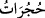
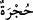
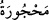
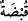
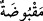
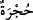
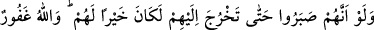

toplamda dokuz oda eder. (
) kelimesi (
) kelimesinin çoğuludur. (
) anlam
olarak (
) demektir, tıpkı (
) kelimesinin (
) anlamında olması gibi. (
)
hücre/oda, insanın kendisi için bir duvar ve benzeri bir şeyle çevirdiği ve başkalarının
girmesine müsâade etmediği yer anlamındadır. (
) kökünden gelir ve ‘men etmek’
demektir. Akla da (
) denilmiştir; çünkü insanın nefsinin çağırdığı şeyleri aklı men
eder.
Onların odaların dışından seslenmeleri iki türlü olabilir. Birincisi, oda oda dolaşıp
dışarıdan Efendimiz (s.a.)’e nidâ etmişlerdir. İkincisi, Efendimiz (s.a.)’i aramak üzere
odalara dağılmışlardır. Çünkü yerini tam bilmiyorlardı. Bazıları bu odanın, bazıları şu
odanın dışından nidâ ettiler. Bazılarının yaptığı fiil tamamına isnâd edilmiş oldu. Nidâ
edenin Uyeyne b. Hısn el-Firâzî -ki kendisine itâat edilen ahmak bir kimseydi ve onu
izler, takip ederdi - ve Temimoğullarının şairi olan Akrâ b. Hâbis olduğu söylenmiştir.
Sonra Efendimiz (s.a.)’e iman etti ve Temimoğullarından yetmiş kişilik bir heyetle
beraber öğle vakti Efendimiz (s.a.) uyurken gelip: “Ya Muhammed! Bizim yanımıza çık.
Bizim medhimiz süs, zemmimiz ise ârdır” dediler. Rasûlullah (s.a.) uyanıp dışarı çıktı
ve şöyle karşılık verdi: “Medhi süs, zemmi âr olan Allah’tır”.
Nidâ hepsine isnâd edilmiştir; çünkü hepsi razı olup ona tâbi oldular veya tâbi
olmakla emrolundular; ya da onların içerisinde bulundular.
Sa’dî Müftî der ki: İstiğrâk-ı cem’ (hepsini kapsama) ile istiğrâk-ı ifrâdî (tektek
hepsini içine alma) kasdolunursa te’vîle ihtiyaç olur. Böyle değil de kasdolunan
istiğrâk-ı mecmû’î (genel olarak hepsini içine alma) ise te’vîle ihtiyaç yoktur. Bunun
için demişlerdir ki: çoğulun (cemi) çoğul (cemi) ile mukabelesi, tekillerin tekillere
karşılık gelmesini (inkısâm) ifâde eder.
Rasûlullah (s.a.)’e onlar sorulunca şöyle cevap verdi: “Onlar Benî Temîm’in kaba
insanlarıdır. Eğer onlar şaşı gözlü Deccâl ile savaşta insanların en şiddetlileri
olmasaydılar, helâk edilmeleri için Allah’a dua ederdim.”[166] Bunun üzerine onları
zemmetmek için âyet nâzil oldu ve bu kötüleme, yerme kıyamete kadar kalacaktır.
Rasûlullah (s.a.)’in “Medhi süs zemmi âr olan Allah’tır” sözü de gerçekleşmiş oldu.
Bahru’l-‘ulûm’da der ki: Âyetteki “çoğu” ifadesi, onlardan bazılarının istisnâ
edildiğini ve akıllıların az olduğunu gösterir. Bundan maksad akledenlerin varlığını
nefyetmektir. Çünkü onların kelâmında azlık nefiy mânâsında kullanılır ve yukarıda
geçen hadis de bu mânâyı teyid eder. Mânâ şöyledir: Onların hepsi de akletmeyen
kimselerdir. Çünkü eğer akılları olsaydı bu derece bir sû-i edebe cesaret edemezlerdi.
Bilâkis teeddüb edip Rasûlullah (s.a.) yanlarına çıkıncaya kadar kapısında beklerlerdi.
Nitekim Cenâb-ı Hak şöyle buyurmuştur: